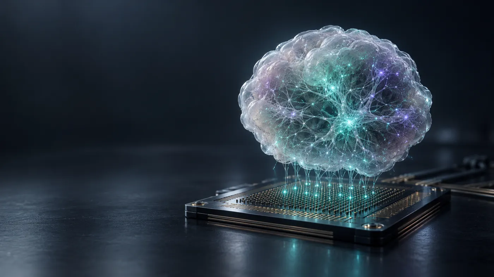
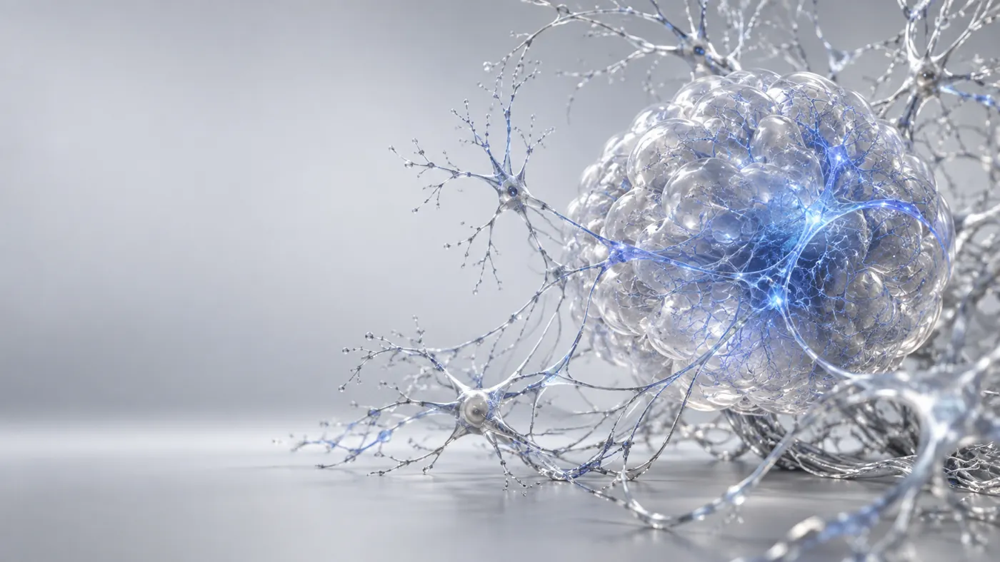

KAIST · BRAIN SCIENCE × BIOLOGY × AI
환자 유래 세포와 뇌 오가노이드를 이용해
뇌질환의 발생 기전과 약물 반응을 연구합니다.
RESEARCH AREAS
HUMAN MODELS. PRECISION RESEARCH.
KAIST 뇌인지과학과 최민이 교수 연구실입니다.
환자 유래 세포와 AI 분석으로 뇌질환과 약물 반응을 연구합니다.

Neural systems / conceptual artworkRESEARCH AREAS
BRAIN RePAIR & ORGANOID INTELLIGENCE
KAIST / DAEJEON
RESEARCH AREAS